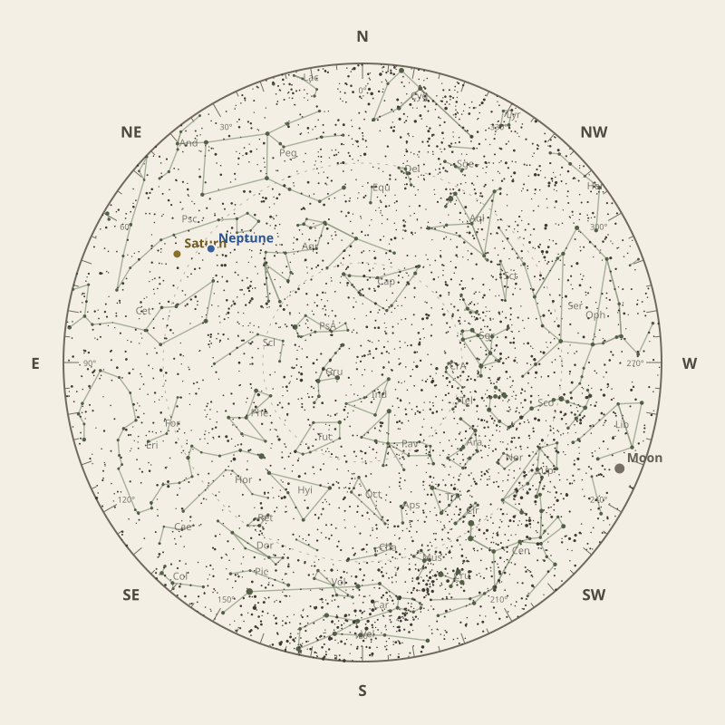

← Annual almanac
North is at the top; east is at the left. Solar System objects shown are above the horizon at 10 pm.
Monthly field almanac
September 2026


Neptune reaches opposition on 26 Sep 2026 and is highest around 12:00 am.
- New Moon
- 11 Sep Darkest skies
- Full Moon
- 27 Sep Brightest skies
- Best dark window
- 8 Sep 11h 33m
Current conditions
Checking the sky near Southern Tasmania, Australia…
Sky chart: 15 Sep 2026, 10 pm
Southern Tasmania, Australia local time.
Show static monthly chart

Night planner
Choose a date to see astronomical darkness, Moon interference, Galactic Centre visibility, and planet altitudes and times.
Best low-Moon dark periods this month
- 6:23 pm–5:56 am11h 33m · 20% Moon
- 6:24 pm–5:54 am11h 30m · 12% Moon
- 6:26 pm–5:53 am11h 27m · 5% Moon


Galactic Centre sessions
- 6:18 pm–1:02 am6h 43m · core to 76°
- 6:20 pm–1:00 am6h 40m · core to 76°
- 6:22 pm–12:52 am6h 30m · core to 76°
Events
- HIP 9627 lunar occultation2:16 am to 3:12 am; Moon at 26° altitude for the first listed contact.
- HIP 29352 lunar occultation4:53 am; Moon at 10° altitude for the first listed contact.
- Uranus stationary pointApparent motion changes direction.
September highlights
- Milky Way
Milky Way core window
4h 13m with 76° altitude.
- Occultations
HIP 9449 lunar occultation
12:51 am to 1:51 am; Moon at 19° altitude for the first listed contact.
- Planetary events
Neptune opposition
Visible for most of the night.
- Planets
Neptune
Best monthly date at 47° altitude.


Moon phases
88%
19%
18%
78%
96%
For faint deep-sky objects, observe when the Moon is below the horizon or weakly illuminated. For lunar relief, observe near the terminator; full Moon is best suited to ray systems and albedo features.
Download Moon phase CSV →

Planet visibility
Evening
- Venus7 Sep · 6:30 pm34° · Good
- Mercury25 Sep · 6:30 pm16° · Fair
 Venus
Venus Mercury
MercuryOvernight
- Neptune28 Sep · 12:00 am47° · Excellent
- Saturn30 Sep · 12:30 am45° · Excellent
 Neptune
Neptune Saturn
SaturnPredawn
- Uranus28 Sep · 4:00 am26° · Good
- Mars30 Sep · 5:30 am18° · Fair
- Jupiter30 Sep · 5:30 am14° · Poor
 Uranus
Uranus Mars
Mars Jupiter
Jupiter